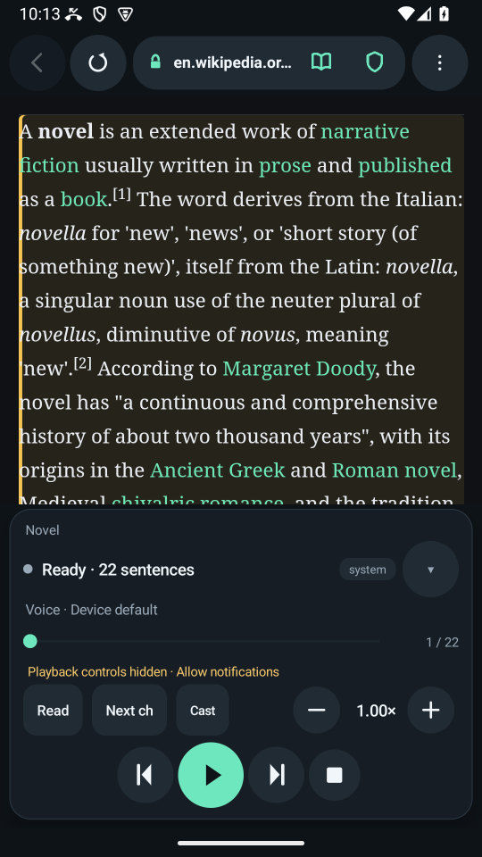
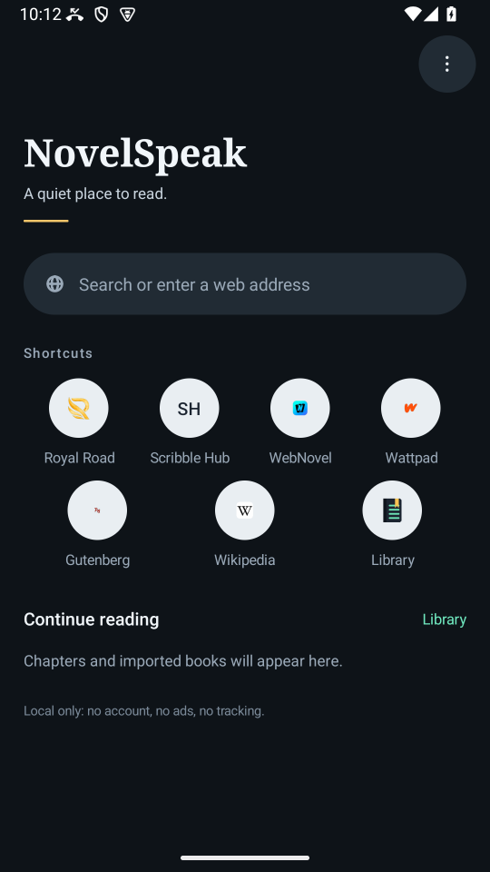
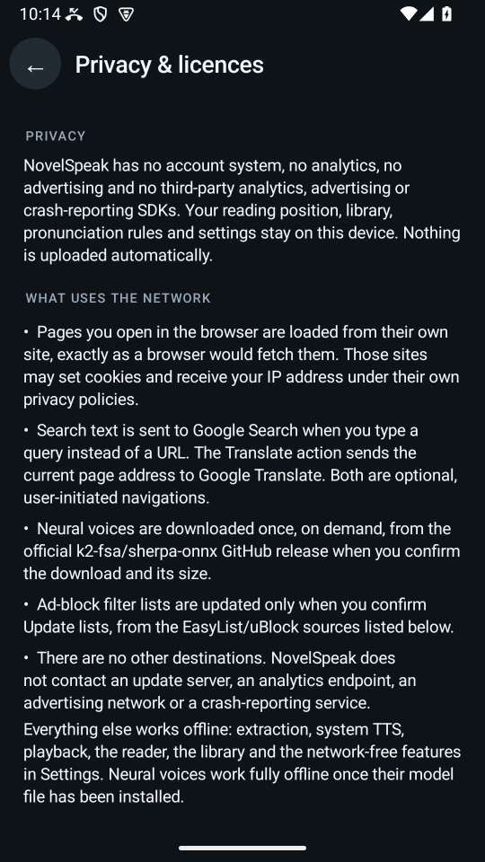

Android 7.0+ · arm64 · Apache-2.0
Read web novels out loud.
NovelSpeak opens the chapter you are on, extracts the text, and speaks it with voices that run on your phone. Screen off. No account, no ads, no telemetry.
v1.3.0 · 15.5 MB · arm64-v8a · SHA-256 published

- No account — nothing to sign in to.
- No ads or analytics — no advertising ID, no crash SDK.
- Voices on the device — after one download, no network.
The chapter, not the chrome.
NovelSpeak is a browser with one job. Open a chapter from the shortcut grid, your library, or any HTTPS link, and it extracts the main text with Readability, falling back to a text-density pass when a site has its own idea about layout. Navigation, ad slots and cookie strips stay out of the queue.
- Extraction
- Readability, then a text-density fallback
- Shortcuts
- Royal Road, Scribble Hub, WebNovel, Wattpad, Project Gutenberg, Wikipedia
- Reader mode
- Per site. One switch.
- Paywalls
- Detected and named. Never bypassed.

Four neural voices, downloaded once.
Use Android's own voice for instant offline playback in every language the phone already ships, or install a neural voice. Kokoro, Supertonic 3, Pocket and ZipVoice run on the phone after a one-time, SHA-256 verified download. Nothing is bundled in the APK.
- Supertonic 3 123 MB
- Kokoro 103 MB
- Pocket TTS 98 MB
- ZipVoice 104 MB + 52 MB
- Android system TTS 0 MB
Models download only after you confirm the size. They come from the upstream sherpa-onnx release and are checked against pinned hashes.
The sentence you hear is the sentence you see.
Word-level highlighting follows the voice inside the page itself, and the page scrolls with it. Long sentences break at punctuation, and the next chapter is extracted in a hidden view so playback does not wait.
- Highlight
- Word level, on the page
- Scroll
- Follows the voice
- Prefetch
- Next chapter, hidden view
- Pause
- Resumes at the start of the current sentence
Alice was beginning to get very tired of sitting by her sister on the bank, and of having nothing to do: once or twice she had peeped into the book her sister was reading, but it had no pictures or conversations in it, “and what is the use of a book,” thought Alice, “without pictures or conversations?”
Lewis Carroll, Alice's Adventures in Wonderland (1865). Public domain, via Project Gutenberg.
Pocket the phone. It keeps reading.
A foreground service, a wake lock and a media session keep the chapter going with the screen off. Wired and Bluetooth buttons move by sentence, play and pause. The sleep timer counts minutes or stops at the end of a chapter.
- Screen off
- Yes. Foreground service and wake lock
- Headset buttons
- Play, pause, next, previous
- Sleep timer
- Minutes, or end of chapter
- Auto mode
- Continues chapter to chapter. Off by default
The library is local: search, filters for chapters, imports and finished books, and a two-column grid from 600 dp. EPUB, PDF with a text layer, and plain text import into app-private storage.
Nothing to sign up for. Nothing to report back.
There is no NovelSpeak server, so there is nowhere for your reading to go. No account, no advertising ID, no analytics SDK, no crash-reporting SDK, no push service. Ad blocking runs inside NovelSpeak's own browser view and touches nothing else on the phone.
- Account
- None
- Analytics
- None
- Ads
- None
- Diagnostics
- Created and shared only when you ask, redacted before writing
What it does not do
- It does not solve a Cloudflare challenge, bypass a login, or read a page it cannot see. It detects those pages, says so, and does not read them aloud.

Install it from a file you can check.
The APK is signed with the project's release key. Download it, compare the SHA-256, and install. Android asks once whether your browser may install apps.
Google Play — coming
sha256sum -c NovelSpeak-1.3.0-arm64-v8a.apk.sha256
Android 7.0 or newer · arm64-v8a · neural voices download separately (98–156 MB) · a debug-signed build must be uninstalled first, and that erases its data.
Questions
Which sites work?
Any HTTPS page opens in the browser. Extraction is best on text-first serials and articles. Sites behind a Cloudflare challenge or a login are detected and left alone.
Does it need the internet?
To fetch a chapter, yes. Playback with an installed voice does not use the network.
How big is it, really?
The app is 15.5 MB. A neural voice is 98–156 MB depending on the model. Android's own voice adds nothing.
Can I listen with the screen off?
Yes. Playback runs in a foreground service with a wake lock, and lock-screen, notification and headset controls work with both engines.
Is it free?
Yes. Apache-2.0, no account, no ads, no paid tier. The source is on GitHub.
Why is it not on Google Play yet?
The listing is not live. 1.4.0 is the store-ready build; until the listing publishes, the signed 1.3.0 APK from GitHub Releases is the supported install.